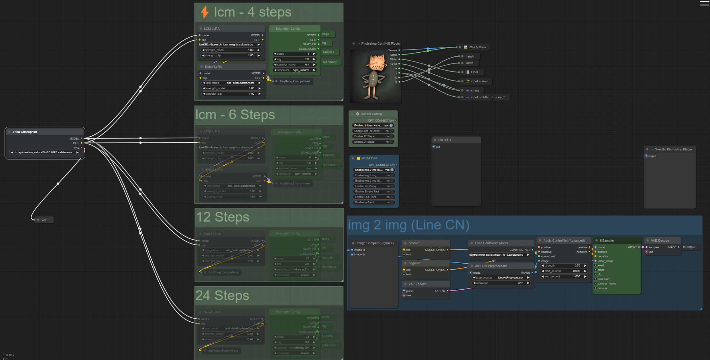

AI / ComfyUI to Photoshop
LineArtProcessor
Integrating Creativity and Flexibility Photoshop is the go-to tool for precise editing, design flexibility, and creative enhancements, but for AI-based image generation and editing, ComfyUI introduces a new realm of possibilities. This seamless transition from Photoshop to ComfyUI allows users to integrate traditional design skills with AI-driven image generation, opening the door to workflows that combine artistic control with computational power.
 OUTPUT
OUTPUT
Photoshop’s layering, masking, and adjustment tools provide a solid base for developing visuals. From there, moving assets to ComfyUI allows for AI-assisted transformations, enhancing images with unique effects, styles, or deep-learning refinements that would be time-consuming or challenging to create manually. With ComfyUI’s node-based interface, designers can set up intricate pipelines, automating steps like image enhancement, style transfer, or even generating multiple variations based on a single base design.
OUTPUT
The ComfyUI Photoshop plugin integrates ComfyUI's AI generation capabilities directly into Adobe Photoshop, enhancing the creative workflow. Version 1.9 includes features like crop over selection with padding, port change support, and improved functionality for image processing. It requires a minimum of 6GB VRAM and Photoshop 2022 or newer. Users can install it easily and access various models and nodes to customize their AI experience.
OUTPUT
The LineArtProcessor within the img2img and ControlNet setup is central to maintaining line-based features in the final image. By preprocessing the image to isolate line elements, it ensures that any subsequent transformations respect these contours. This setup is ideal for workflows that require stylizing existing artwork, especially if the input has a defined structure that the user wants to maintain, such as in anime, comics, or highly stylized character illustrations. The processor’s effectiveness lies in its ability to produce coherent results that closely follow the input's outlines, delivering high-quality, stylized output that remains true to the initial line work.

This workflow appears to be a comprehensive setup for generating images pipeline, potentially geared towards creating stylized, cartoonish, or character-focused artwork using various processing steps. Here’s a breakdown of its components, with a focus on the LineArtProcessor and related elements

The LineArtProcessor is a component often used in image processing workflows to isolate and emphasize the line art or contours of an image, particularly in applications where clean lines or stylized outlines are important. This makes it valuable for artists working with cartoons, comics, anime, and other line-heavy art forms, where it's crucial to maintain the integrity of the original line work even after significant processing.
Special Thanks
In the end I want to thank my amazing friend Nima, who did all the hard work to make this plugin available. You can check out his GitHub page here: Nima's GitHub Page.
The LineArtProcessor opens up new creative possibilities, making it easier than ever to transform sketches and outlines into polished, stylized art. Whether for comics, animations, or concept art, this tool is a game-changer for artists and designers seeking to bring their line art to life.